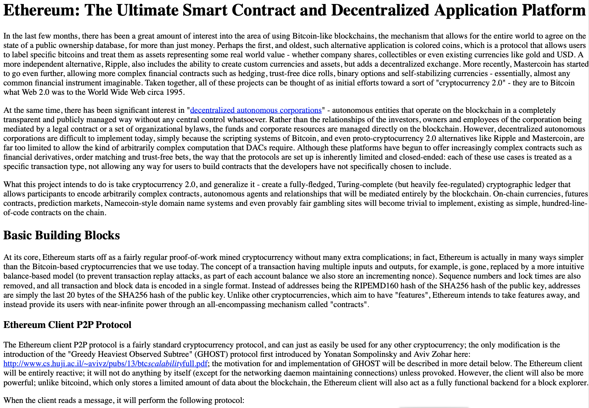
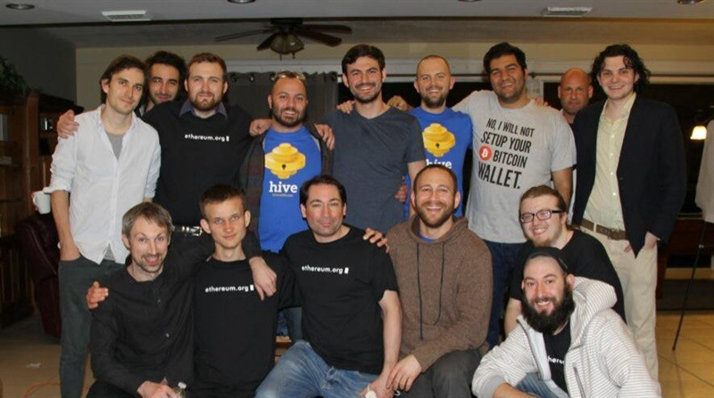
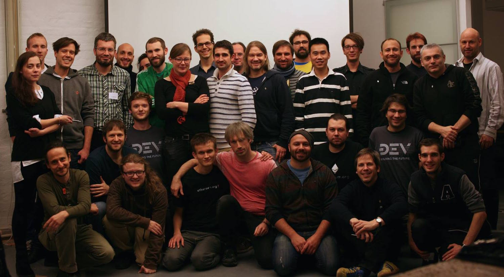
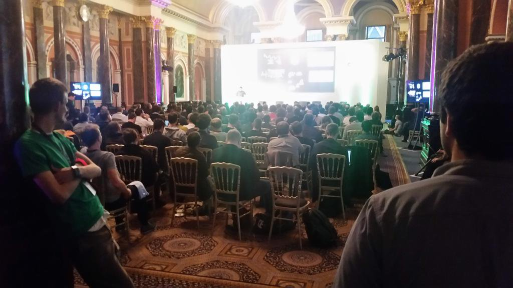
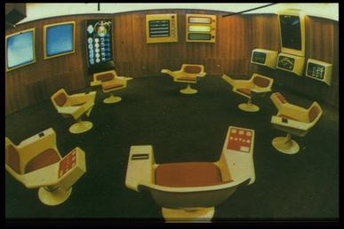

🧙 Magicians & Bureaucrats 🧑💼
in the Ethereum galaxy
🧙
What do we think a Magician is?
🧑💼
What do we think a Bureaucrat is?
Who Am I?

Jamie Pitts
DevOps Bureaucrat, Community Magician
http://twitter.com/jamiepitts
Our eosystem is challenging to navigate
Navigators, map-makers, and historians can help|
|
There is a lot to understand

Ethereum galactic history
Why is it so bright and violent?
How did the structures form?
What factors created the social norms?
Ethereum's primordial soup
- Hacker culture
- Cypherpunks
- Dissolution of the Soviet Union
- Burning Man
- Open Source
- Internet culture / memes
- Austrian economics
- 2008-9 Financial Meltdown
- Occupy Wall Street
- Bitcoin culture
The big bang
Late 2013: Vitalik Buterin's WP
BTC Miami, January 2014

"The project is driven by the idea,
not by a personality or group of personalities"
- Heather Marsh, "Binding Chaos"
Bright and violent history
Late 2013 - 2014
- Ideas, proposals, papers
- Self-organizing teams
- Rough organizations, legal entities
Devcon0: November 2014

"leadership in a swarm is received through inspiring others:
standing up, doing without asking permission, leading by example"
- Rick Falkvinge, Pirate Party
Bright and violent history
2014-15: Systems begin to form
- Exits due to 💔 "differences in principles"
- Client and dapp development teams emerge
- Capital is in motion, the Project is funded
- Systems under pressure as crypto crashes
Devcon1: November 2015

"No individual needs permission (competitive) or consensus
(cooperative) to propose an idea or initiate a project"
- Heather Marsh, Occupy Movement
Bright and violent history
2015-16: Basic structures of the community recognizable
- Non-profit 💔 For-profit bifurcation - The EF
- Stakeholders and maintainers emerge
- Protocol gov documents: pre-EIPs on etherpad
- Key organizations emerge around resources
Bright and violent history
2016-17: Infrastructure and crises
- Jurisdiction-based 💔 Decentralized bifurcation - The DAO
- Code Is Law 💔 Humans In Charge bifurcation - DAO Fork
- Protocol gov: private channels ➡ public meetings
- Infrastructure is attacked, systems are tested
🧙
A moment of appreciation for the Magicians
Ethereum community dynamics
- Adversarial environment
- Anti-authoritarian culture
- Contention between stakeholders, drama, exits
- Networks of trust between people
Ethereum community dynamics
- Online forums, comms channels, events
- Over-funded systems vs. under-funded systems
- Magicians explore, create, expand systems
Bureaucrats stabilize systems
Now add even more matter & energy
Bright and violent history
2017-2018: Ignition
- First killer app: ICOs
- Systems under pressure as crypto soars
- Protocol governance goes pro
- Many new people, many new projects
Bright and violent history
2018-2019: Aftermath
- Libertarian 💔 Socialist bifurcation - block rewards
- Libertarian 💔 Technocrat bifurcation - ProgPOW
- DeFi gets early traction
- Ethereum Foundation expands support
What is constraining the
explosive energy?
We might point to organizations...
Ethereum Foundation, ConsenSys, Parity Tech, Status, Aragon
...yet there are hundreds of indie teams!
Teams cluster around resources
Resource allocation requires guidance
What is the guidance system here?
Who manages access to the resources?
The bureaucracy!
|
Leaders Operations Project managers Product managers |
Admin assistants Finance / Accounting Lawyers DevOps / IT |
Challenges for crypto bureaucracy
- Power corrupts us
- Widespread mistrust of authority
- Widespread inexperience
- Magicians want to build w/o interference
- "This is crypto"
🧑💼
A moment of appreciation for the Bureaucrats
Cybernetics
kybernētikḗ, meaning "governance"
kybernḗtēs, meaning "helm-person" of the "ship"
Cybernetics
|  Control systems | → |
Self-organized systems |
Norbert Wiener
WWII anti-aircraft systems, automatic aiming and firingIdea: Negative feedback can keep systems in balance
Idea: Use of info ➡ localized decrease in entropy
Friedrich Hayek
Classical liberalism, coordination function of pricesCatallaxy: "self-organizing system of voluntary co-operation"
Idea: The price mechanism as a means to transmit information in the cybernetic system.
Heather Marsh
WikiLeaks, Occupy Wall StreetIdea: Stigmergic society
"With stigmergy, an initial idea is freely given, and the project is driven by the idea, not by a personality or group of personalities."
Rick Falkvinge
Swarm organizations, The Pirate Party"Swarmwise", 2013
Structure to escape Dunbar's number / social cognitive limit
Joe Freeman
Women's liberation movement, Principles of Democratic Structuring"Tyranny of Structurelessness", 1970
"As long as the structure of the group is informal, the rules of how decisions are made are known only to a few and awareness of power is limited to those who know the rules."
🧑💼
Applied cybernetics / decentralized planning
Enable 🧙s to research, build, and launch
Enable 🧑💼s to lead, support, and constrain
Declare your principles!
(which is "how" we do something)
Delegation of specific responsibility to specific individuals
for specific tasks by consensus-based procedures
Distribution of responsibility
among as many people as is reasonably possible
Practice pragmatic openness
and pragmatic reformism
Every 🚀 needs a control system
Who Am I?
Jamie Pitts
http://twitter.com/jamiepitts
This presentation was built with reveal.js https://github.com/hakimel/reveal.js